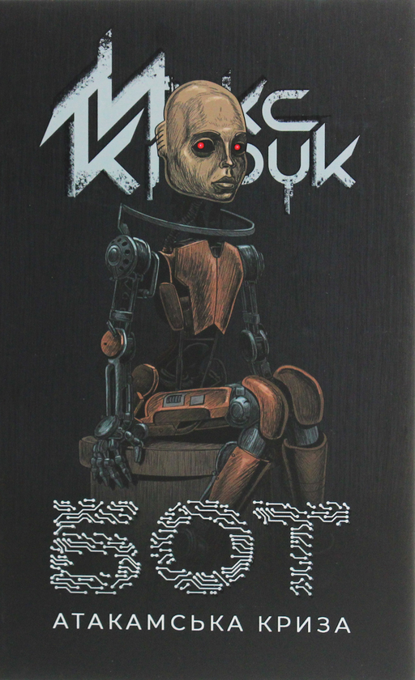
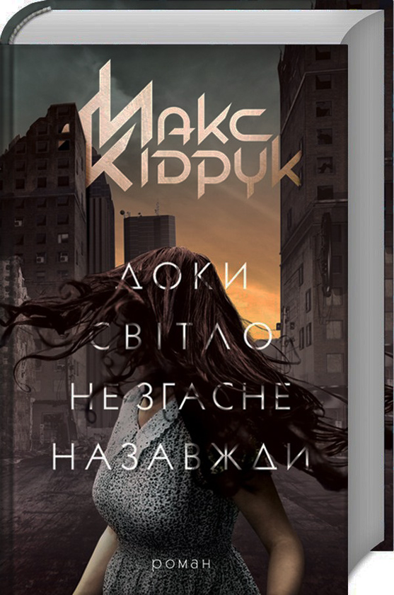
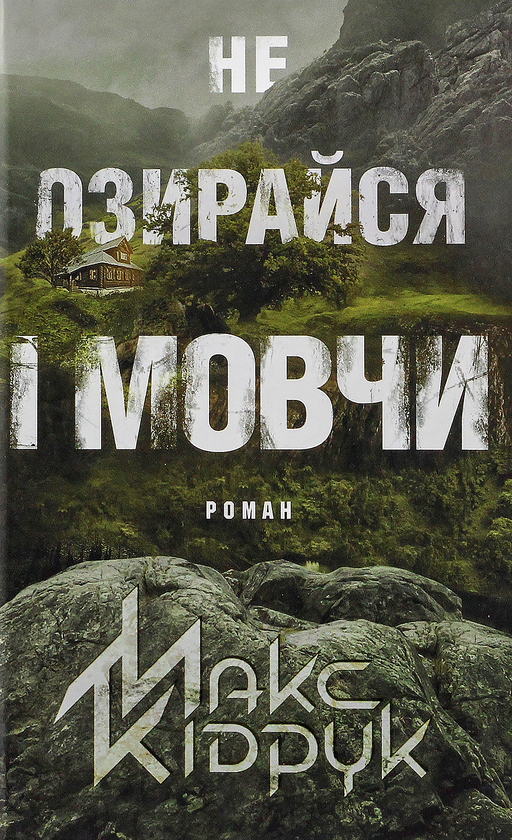

Біографія
Народився 1 квітня 1984 року в місті Рівне. Закінчив Рівненський державний гуманітарний університет за спеціальністю «Теплоенергетика». Відомий своїм захопленням наукою, подорожами та літературою, Кідрук багато часу проводить у дослідженнях, що впливають на створення його книг.
Його стиль — це комбінація динамічного сюжету, технічних деталей та глибоких роздумів про людину та її місце у світі. Макс також активно взаємодіє з читачами, проводить презентації своїх книг і виступає на літературних фестивалях.
Твори

Бот
Науково-фантастичний трилер, який розповідає про таємничі події, пов'язані з технологіями штучного інтелекту.

Доки світло не згасне назавжди
Емоційно насичений роман про зв'язок між життям, смертю та найтемнішими куточками людської душі.

Не озирайся і мовчи
Психологічний трилер, що змушує замислитись про моральні дилеми та наслідки наших виборів.
Цитати
“Мрії — це найбільш дивна форма відчайдушності.”
“Люди, які бояться змін, завжди залишаються у минулому.”
Цікаві факти
- Макс Кідрук є одним із засновників жанру технотрилера в Україні.
- Він часто співпрацює з науковцями для забезпечення реалістичності своїх книг.
- Його книги перекладено на декілька мов, серед яких англійська, польська та німецька.
← Назад